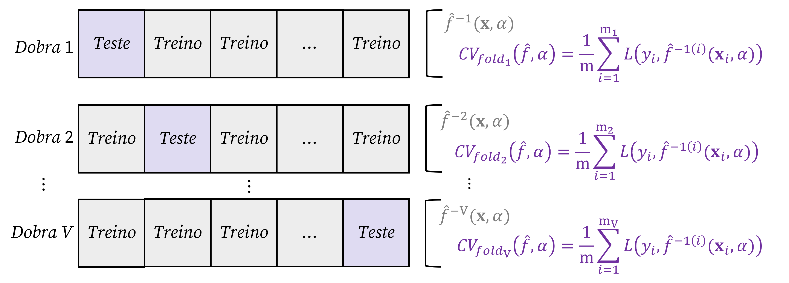
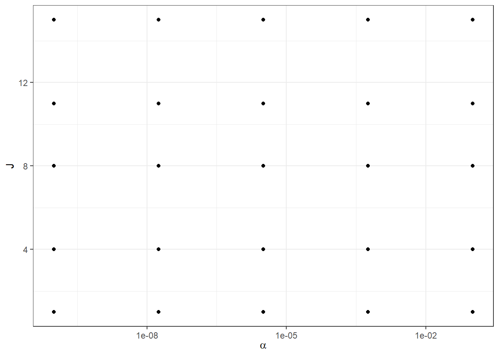
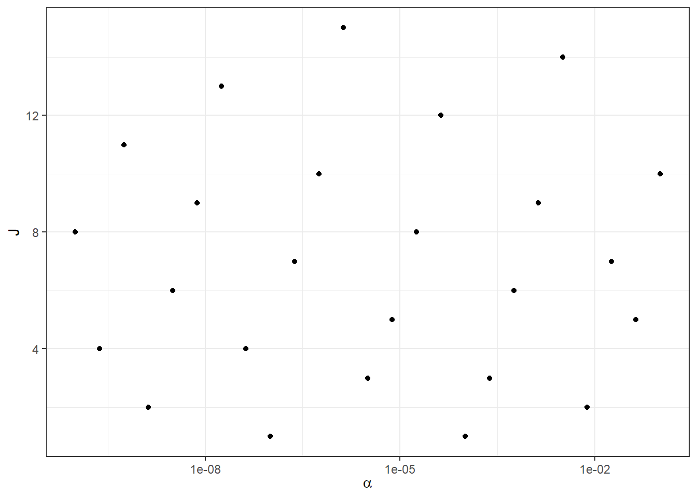
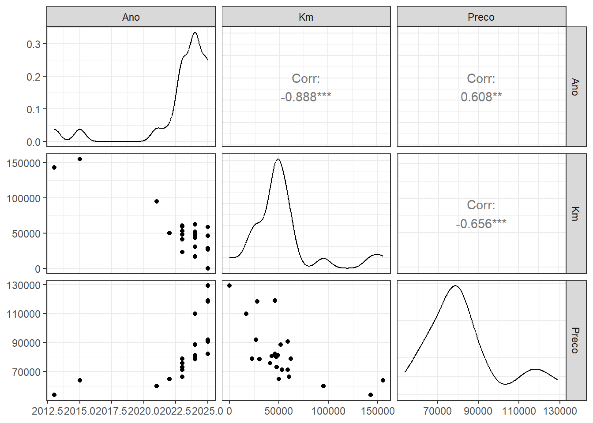
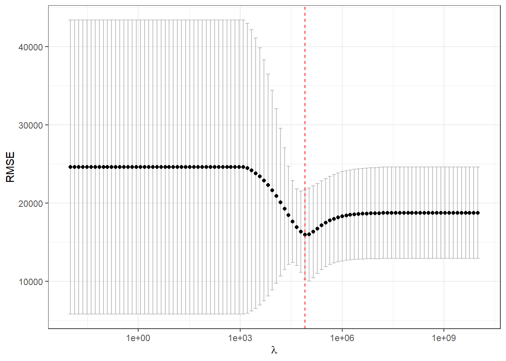
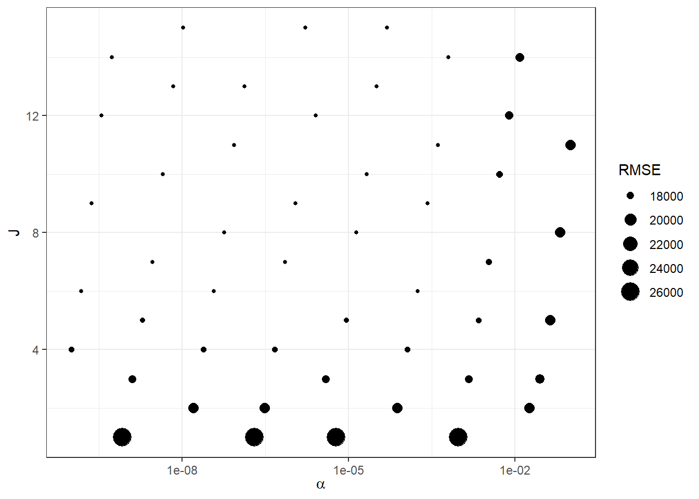
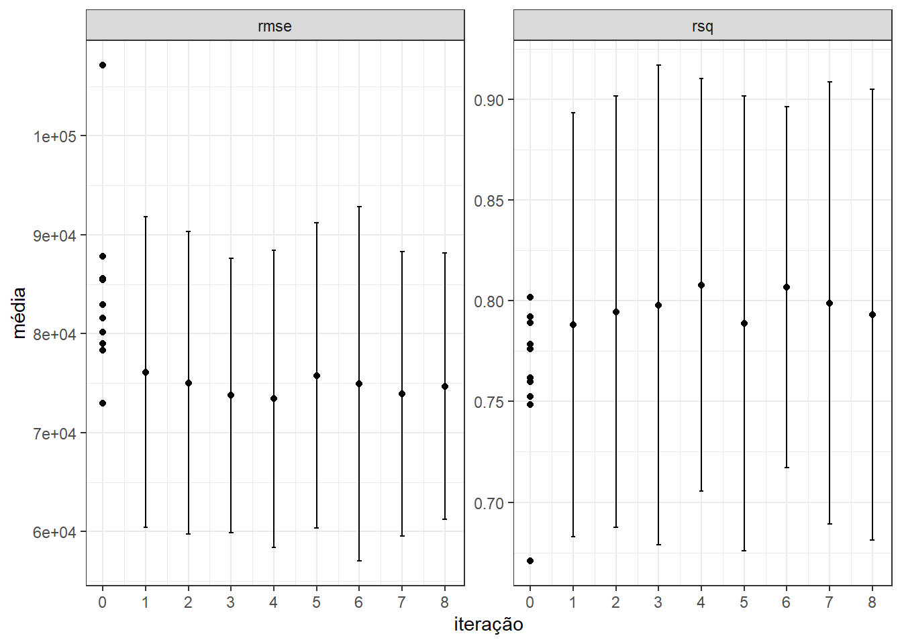
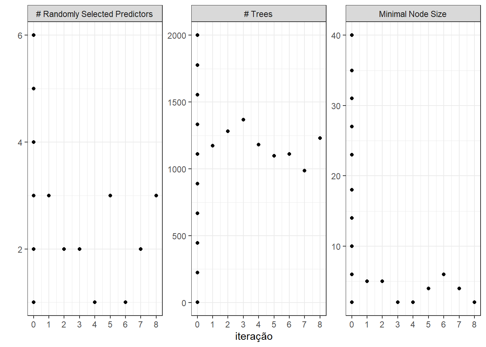
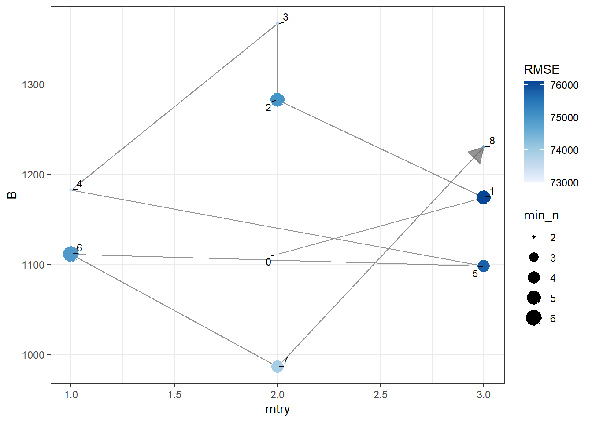

7 Validação cruzada e otimização de hiperparâmetros
7.1 Conceitos iniciais
Seja a modelagem de uma resposta \(y\) a qual supõe-se dependente de um vetor de variáveis de entrada ou preditoras \(\mathbf{x} = [x_1, ..., x_k]^T\). Um modelo desconhecido pode ser denotado \(f(\mathbf{\mathbf{x}, \mathbf{\alpha}})\), onde \(\mathbf{\alpha}\) consiste em um (ou um conjunto de) hiperparâmetro que minimiza o erro de previsão. Um conjunto de observações de treino, \(\mathcal{D}_{treino} = \{(\mathbf{x}_1,y_1), ..., (\mathbf{x}_n,y_n)\}\), obtidos da distribuição de probabilidade conjunta de \(\mathbf{x},y\), \(P(\mathbf{x},y)\), está disponível para o propósito de estimativas. O modelo estimado, \(\hat{f}(\mathbf{x}, \mathbf{\alpha})\), é obtido pela minimização de uma função perda, que mede a distância entre o modelo e as observações de treino. No caso de problemas de regressão, \(y \in \mathbb{R}^1\), a escolha mais comum é a função perda quadrática, \(L(y,\hat{f}(\mathbf{x}, \mathbf{\alpha})) = (y-\hat{f}(\mathbf{x}, \mathbf{\alpha}))^2\). O erro de generalização ou de teste pode ser calculado segundo a Equação 7.1, onde \((\mathbf{x}_0,y_0)\) é uma nova observação.
\[ Err_\mathcal{T} = E[L(y_0,\hat{f}(\mathbf{x}_0, \mathbf{\alpha}))|\mathcal{T}] \tag{7.1}\]
Definição
Por hiperparâmetros entendem-se variáveis específicas dos métodos de aprendizado, as quais devem ter seus valores definidos durante o treinamento do modelo, de acordo com os dados de treino disponíveis, de forma a garantir uma melhor capacidade de generalização do modelo. Por exemplo, para a regressão rígida, o hiperparâmetro consiste na constante de regularização ou penalização de encolhimento, \(\lambda\). Já o método árvore de decisão, inclui como hiperparâmetros a complexidade de custo, \(\alpha\), o número máximo de nós terminais ou folhas, \(J\), e o número mínimo de observações por partição (min_n).
Importante
O erro de treino, \(\overline{err}\), sempre será maior que o erro de generalização, \(Err_\mathcal{T}\). A forma mais eficiente e prática de estimar o erro de generalização é através da validação cruzada.
7.2 Validação cruzada por dados de treino e teste
A validação cruzada por dados de treino e teste é o método mais simples de estimativa do erro futuro. As \(n\) observações disponíveis, \(\mathcal{D}\), são aleatoriamente divididas em observações de treino, \(\mathcal{D}_{treino}\), e teste, \(\mathcal{D}_{teste}\). O modelo é estimado usando as observações de treino e testado nas observações de teste. Conforme explicado, a própria função perda pode ser usada para avaliar a capacidade de generalização do modelo. Outras métricas de ajuste, já apresentadas na Seção 2.1.1, são úteis úteis para avaliar o erro em dados de teste.
Há dois problemas mais latentes na abordagem treino e teste. O erro estimado nos dados de teste apresentam alta variabilidade dependendo das observações que foram sorteadas para treino e teste. Devido uma parte significativa das observações ser separada para teste, geralmente a abordagem em questão tende a superestimar o erro do modelo quando aplicado em todo conjunto de dados.
7.3 Validação cruzada por \(v\)-dobras
A validação cruzada via \(v\)-dobras (\(v\)-fold cross-validation) é a abordagem mais recomendada dadas suas propriedades e simplicidade. Nesta abordagem, divide-se os dados disponíveis em \(V\) partes ou dobras, \(v = 1, ..., V\), com aproximadamente o mesmo número de observações em cada partição, \(n_v \sim N/V\). Para a \(v\)-ésima partição o modelo é estimado usando os dados das outras \(V-1\) partições ou dobras, enquanto o erro é estimado na \(v\)-ésima dobra. Seja a função aproximada com a \(v\)-ésima dobra excluída, \(\hat{f}^{-v(i)}(\mathbf{x}_i,\alpha)\). O erro de generalização ou teste é calculado via validação cruzada segundo a Equação 7.2.
\[ CV(\hat{f}, \alpha) = \frac{1}{n} \sum_{i=1}^n L(y_i, \hat{f}^{-v(i)}(\mathbf{x}_i,\alpha)) \tag{7.2}\]
A Figura 7.1 ilustra o processo de validação cruzada por \(v\)-dobras para \(V=5\) dobras.
7.4 Validação cruzada por leave-one-out
O método leave-one-out (LOO) é um caso particular do \(v\)-dobras para \(V = n\), ou seja, considera uma observação, \(m=1\), em cada partição ou dobra. É geralmente utilizado para casos onde há poucas observações disponíveis. Para a primeira dobra, um modelo é estimado para as \(n-1\) observações remanescentes e testado na primeira observação. Tomando por exemplo a métrica \(RMSE\), o erro é estimado como \(\sqrt{(y_1-\hat{y}_1)^2}\), uma estimativa com pouco viés, porém com alta variância, devido ao tamanho amostral unitário, portanto limitado.
A maior vantagem da abordagem \(v\)-dobras para o LOO é o tempo computacional. Tomando \(v=10\), por exemplo, serão estimados 10 modelos, enquanto a validação via LOO estimará \(n\) modelos, o que pode implicar em alto tempo computacional para tamanhos amostrais grandes, especialmente para métodos de aprendizado mais complexos. Para métodos de origem na estatística, como os modelos de regressão por mínimos quadrados, é possível estimar o erro via LOO sem necessariamente fazer um loop computacional, mas considerando o erro de previsão do modelo, a partir da matriz chapéu, \(\mathbf{X}(\mathbf{X}^T\mathbf{X})^{-1}\mathbf{X}^T\). Entretanto, este livro dará ênfase na abordagem iterativa, visto que viabiliza o uso do LOO em outras abordagens não paramétricas.
7.5 Grid search
Grid search consiste em uma busca dos níveis adequados dos hiperparâmetros considerando uma malha (grid) de combinações possíveis dos níveis de interesse dos hiperparâmetros em avaliação. Dependendo do número de hiperparâmetros e níveis considerados, a busca pode tornar-se mais difícil e custosa computacionalmente.
Seja a estimativa de um modelo de árvore de decisão considerando como hiperparâmetros \(\alpha\) e \(J\). Um possível grid regular com 5 níveis para cada hiperparâmetro é plotado na Figura 7.2.

Pode-se constatar que o grid regular consiste em um planejamento fatorial, ou seja, todas as combinações dos níveis dos hiperparâmetros são consideradas. Há também grids irregulares, especialmente para hiperparâmetros em escala real, sendo empregados planejamentos de preenchimento de espaço viavel, que visam preencher o espaço dos hiperparâmetros de forma homogênea, visando uma boa exploração deste. A Figura 7.3 ilustra um exemplo de grid de preenchimento de espaço viável para árvore de decisão.

Importante
O grid search deve ser usado junto com a validação cruzada. Por exemplo, ao se usar a validação cruzada via \(v\)-dobras, uma busca exaustiva testará cada combinação dos níveis de interesse dos hiperparâmetros em cada dobra.
Dica
Existem, entretanto, diversas técnicas para realizar o grid search de forma mais eficiente, evitando a busca em regiões que tendem a apresentar baixo desempenho dos modelos. Há pacotes computacionais que viabilizam a aplicação de tais técnicas.
7.5.1 Validação cruzada por \(k\)-dobras com grid search para seleção da penalização de encolhimento em regressão rígida
Sejam os dados de preços de carros usados modelo Saveiro em função da quilometragem e ano de fabricação.
Espera-se observar correlação negativa entre quilometragem e preço, correlação positiva entre ano e preço, além de correlação negativa entre quilometragem e ano, conforme Figura 7.4.

Devido ao número baixo de observações e a alta correlação entre os preditores, uma escolha razoável para modelagem seria a regressão rígida, de forma a buscar-se encolher os coeficientes em razão de uma possível inflação decorrente da multicolinearidade dos preditores. Neste método é importante realizar a escolha da penalização de encolhimento, \(\lambda\), que regula a soma dos quadrados dos erros de previsão de treino e o crescimento dos coeficientes. Uma vez que deve-se selecionar o nível ideal deste hiperparâmetro para evitar sobreajuste, na validação cruzada via \(v\)-dobras, é importante testar um conjunto de funções, \(\hat{f}^{-v(i)}(\mathbf{x}_i,\lambda_l)\), onde \(\lambda_l\) seria o nível do hiperparâmetro a ser testado, considerando um vetor ou grid de níveis tentativos, \(l=1,...,L\). Deve-se testar cada modelo em cada partição ou dobra, ou seja, serão testados ao final \(V\times L\) modelos, sendo o melhor valor de \(\lambda\) escolhido comparando o valor médio do erro obtido na validação nas \(V\) dobras,
\[ CV_l(\hat{f}, \lambda_l) = \frac{1}{n} \sum_{i=1}^n L(y_i, \hat{f}^{-v(i)}(\mathbf{x}_i,\lambda_l)) \] para todo \(l=1,...,L\).
Tomando o conjunto de dados com 24 observações, 21 são sorteadas para treino e 3 para teste. Inicialmente, faz-se o sorteio das observações de cada partição ou dobra. Tomando \(V=7\), para \(n=21\), tem-se exatamente \(n_v=21/7=3\) observações por dobra. A Tabela 7.1 expõe os dados de treino considerando o particionamento realizado de forma aleatória, identificando cada dobra com uma cor distinta e com a coluna fold.
| Ano | Km | Preco | fold |
|---|---|---|---|
| 2024 | 52003 | 88590 | 4 |
| 2025 | 28335 | 118220 | 2 |
| 2025 | 58805 | 90690 | 3 |
| 2023 | 59022 | 71410 | 2 |
| 2024 | 47234 | 79990 | 5 |
| 2013 | 143000 | 53900 | 7 |
| 2025 | 45970 | 82110 | 1 |
| 2024 | 30239 | 78700 | 6 |
| 2022 | 49900 | 64990 | 4 |
| 2024 | 42817 | 80790 | 3 |
| 2024 | 17000 | 109900 | 1 |
| 2024 | 46423 | 81190 | 5 |
| 2025 | 26990 | 91990 | 6 |
| 2023 | 22800 | 78900 | 2 |
| 2024 | 49272 | 81390 | 7 |
| 2023 | 41146 | 75990 | 5 |
| 2023 | 53230 | 71390 | 3 |
| 2025 | 0 | 129200 | 6 |
| 2023 | 60314 | 66330 | 4 |
| 2025 | 45959 | 118990 | 1 |
| 2023 | 47775 | 73170 | 7 |
Ordenando segundo a coluna das dobras ou folds, tem-se a Tabela 7.2.
| Ano | Km | Preco | fold |
|---|---|---|---|
| 2025 | 45970 | 82110 | 1 |
| 2024 | 17000 | 109900 | 1 |
| 2025 | 45959 | 118990 | 1 |
| 2025 | 28335 | 118220 | 2 |
| 2023 | 59022 | 71410 | 2 |
| 2023 | 22800 | 78900 | 2 |
| 2025 | 58805 | 90690 | 3 |
| 2024 | 42817 | 80790 | 3 |
| 2023 | 53230 | 71390 | 3 |
| 2024 | 52003 | 88590 | 4 |
| 2022 | 49900 | 64990 | 4 |
| 2023 | 60314 | 66330 | 4 |
| 2024 | 47234 | 79990 | 5 |
| 2024 | 46423 | 81190 | 5 |
| 2023 | 41146 | 75990 | 5 |
| 2024 | 30239 | 78700 | 6 |
| 2025 | 26990 | 91990 | 6 |
| 2025 | 0 | 129200 | 6 |
| 2013 | 143000 | 53900 | 7 |
| 2024 | 49272 | 81390 | 7 |
| 2023 | 47775 | 73170 | 7 |
Testando-se um grid de 100 níveis para \(\lambda\) variando de \(10^{10}\) até \(10^{-2}\), pode-se avaliar o erro médio das 7 dobras para cada valor testado de \(\lambda\). Sugere-se ralizar um itervalo de confiança para a média do erro de teste para todos as dobras ou partições, conforme plotado na Figura 7.5. Um \(\lambda\) igual a 81113 garante menor erro médio nas partições de teste.

7.5.2 Validação cruzada por \(k\)-dobras com grid search para seleção da profundidade da árvore e complexidade de custo na regressão por árvore de decisão
Seja agora um modelo de regressão por árvore de decisão para prever o preço de revenda de carros usados considerando marca, modelo, ano, quilometragem, tipo de câmbio, motor e válvulas. A Figura 7.6 apresenta o erro médio da validação cruzada em função da profundidade da árvore e da complexidade de custo. Observa-se que árvores com 6 ou mais nós terminais e \(\alpha\) de baixo a intermediário garantem um RMSE mais baixo, havendo neste caso várias combinações dos dois hiperparâmetros que retornam erro similar de teste.

7.6 Busca iterativa
O problema da otimização de hiperparâmetros via grid search é que este método faz uma busca exaustiva em todo as combinações dos hiperparâmetros, isto é, em todo grid de interesse. Em métodos com poucos hiperparâmertos e/ou quando o número de combinações dos níveis de interesse destes a ser testada é baixo, a busca exaustíva é viável. Porém, em métodos onde o número de hiperparâmetros é alto, o que mesmo com poucos níveis a serem testados levará a um grid consideravelmente grande, a busca exaustíva torna-se computacionalmente inviável. Métodos como floresta aleatória, máquinas de vetores de suporte, redes neurais, entre outros, podem inviabilizar o grid search e exigir métodos de otimização não-linear para busca dos níveis dos hiperparâmetros que minimizem a perda. Tais métodos podem incluir os baseados em gradiente, ou os métodos de busca aleatória. Neste livro será introduzido a busca via recozimento simulado.
O Recozimento simulado (ou simulated annealing) é uma meta-heurística de busca probabilística fundamentada na termodinâmica. A ideia do algoritmo é mimetizar o resfriamento lento e controlado do tratamento térmico de recozimento, onde os átomos do material metálico se reorganizam buscando uma configuração de menor energia interna, viabilizando redução de defeitos do material. A meta-heurística imita este comportamento, fazendo uma busca aleatória controlada. Dada uma solução inicial, o arrefecimento simulado busca aleatoriamente candidatos vizinhos no espaço de busca dos hiperparâmetros e avalia se estes melhoram ou não a função perda. Em caso de melhora estes são considerados para o próximo passo. Caso contrário, a nova solução pode ser aceita dependendo se a probabilidade calculada na Equação 7.3 supera uma probabilidade aleatória obtida via distribuição uniforme. Observe que a Equação 7.3 considera a iteração \(i\) no clálculo da probabilidade, de forma que esta diminui (ou resfria) com o tempo.
\[ P(aceita) = \exp\left[-i\left(f(\alpha_i)-f(\alpha_{i-1})\right)\right] \tag{7.3}\]
O processo continua até um número definido de iterações ou outro critério de parada, por exemplo um número máximo de iterações sem melhoria na solução.
7.6.1 Busca iterativa via arrefecimento simulado para otimizar hiperparâmetros de um modelo de floresta aleatória para a previsão de preço de carros elétricos
O método floresta aleatória apresenta 3 hiperparâmetros. COnsiderar um grid regular com 5 níveis para cada resulta em \(5^3=125\) combinações, o que acarretaria em um alto tempo computacional. Logo, recomenda-se uma busca iterativa. Usando o arrefecimento simulado considerando 5 pontos iniciais e 25 iterações, com no máximo 10 pontos sem melhoria na solução, espera-se obter um tempo computacional viável.
A Figura 7.7 plota graficamente a evolução do erro na validação cruzada com as iterações. Pode-se observar que na iteração inicial as 10 soluções iniciais são testadas, sendo a melhor selecionada para o próximo passo. Em sequência, observa-se em alguns momentos melhora, em outros pior da solução, com maior tendência de não acontecer perdas com o aumento do número de iterações. Não foram testadas todas as iterações, pois foi considerado como critério de parada adicional no máximo 5 iterações sem melhora na solução. A solução final selecionada é a de melhor resultado entre todas as iterações, isto é, a que minimiza a perda.
autoplot(rf_sa_res, type = "performance") +
labs(x="iteração",y="média") +
theme_bw()
A Figura 7.8 expõe os níveis dos hiperparâmetros testados em cada iteração via arrefecimento simulado.
autoplot(rf_sa_res, metric= "rmse", type = "parameters") +
labs(x="iteração",y="") +
theme_bw()
A Figura 7.9 mostra a mudança dos hiperparâmetros e do RMSE na busca iterativa.

Para fins de comparação, foi realizada uma busca via grid search com grid regular de 125 hiperparâmetros. O método racing ANOVA também foi testado. Este método avalia todas as combinações do grid de hiperparâmetros nas primeiros dobras, e a cada nova dobra, elimina estatisticamente as combinações cujo desempenho é significativamente pior que a melhor até então, evitando gastar tempo computacional em regiões de baixo desempenho no espaço dos hiperparâmetros. A eliminação é feita via ANOVA de medidas repetidas entre dobras. A Tabela 7.3 compara o RMSE do arrefecimento simulado com a busca exaustiva e o racing ANOVA. Apesar de, considerando-se o erro-padrão os métodos terem desempenho estatisticamente similar, o RMSE médio do arrefecimento simulado foi menor que os demais. É importante também avaliar o erro de teste, conforme realizado na seção de implementação em R.
| metodo | mtry | trees | min_n | RMSE médio | Erro padrão |
|---|---|---|---|---|---|
| Grid Regular | 1 | 500 | 2 | 72,793.62 | 5,618.50 |
| Sim. Annealing | 2 | 1111 | 2 | 72,999.54 | 5,299.42 |
| Racing (ANOVA) | 2 | 1000 | 2 | 73,000.78 | 5,147.23 |
A Tabela 7.4 compara o tempo computacional dos três métodos de busca. Observa-se que o arrefecimento simulado apresentou tempo muito inferior aos tempos das demais estratégias de busca.
| Método | Tempo |
|---|---|
| Grid Regular | 94.73 |
| Sim. Annealing | 16.59 |
| Racing ANOVA | 84.93 |
Dica
Após a realização da validação cruzada e otimização dos hiperparâmetros pode-se estimar o modelo com os hiperparâmetros otimizados em todo o conjunto de dados, porém o mais importante é fazer uso, isto é, aplicar o modelo selecionado na realização de previsões.
7.7 Implementações em R
A seguir serão expostas as implementações necessárias para obter os resultados do capítulo.
7.7.1 Exemplo de regressão rígida com grid regular
Carregando os pacotes. O pacote finetune contém os métodos de otimização de hiperparâmetros descritos no capítulo.
library(sjdatar)
library(GGally)
library(dplyr)
library(tidymodels)
library(finetune)Leitura e particionamento dos dados.
data(carrosusados2025webmotors)
dados <- carrosusados2025webmotors |>
filter(Carro == "SAVEIRO") |>
select(Ano,Km,Preco)
set.seed(36)
dados_split <- initial_split(dados, prop = 0.9)
# dados_split
dados_treino <- training(dados_split)
dados_teste <- testing(dados_split)Visualizando as correlações e distribuições das variáveis.
ggpairs(dados) + theme_bw()Receita, modelo e workflow.
receita <- recipe(Preco ~ Ano + Km,
data = dados_treino) |>
step_normalize(all_numeric_predictors())
modelo_ridge <- linear_reg(
penalty = tune(),
mixture = 0 # Ridge puro
) |>
set_engine("glmnet")
wf <- workflow() |>
add_recipe(receita) |>
add_model(modelo_ridge)Definindo um grid de 100 valores para \(\lambda\). Optou-se neste exemplo por definir os valores, entretanto é possível via grid_regular(penalty(), levels = 100) obter um grid automático, porém com amplitude mais baixa.
lambda_grid <- tibble(penalty = 10^seq(10, -2, length = 100))
# lambda_grid <- grid_regular(penalty(), levels = 100)Definindo o número de partições e sorteando as observações destas considerando os dados de treino, onde v = 7 define o número de partições nos dados.
set.seed(10)
folds <- vfold_cv(dados_treino, v = 7)Fazendo a validação cruzada com grid search.
resultado_cv <- tune_grid(
wf,
resamples = folds,
grid = lambda_grid
)Coletando os resultados da validação cruzada com grid search.
perf <- resultado_cv |>
collect_metrics() |>
filter(.metric == "rmse")Observando os resultados.
melhor_lambda <- select_best(resultado_cv,
metric = "rmse")
melhor_lambda
ggplot(perf, aes(x = penalty, y = mean)) +
geom_errorbar(aes(ymin = mean - 1.96 * std_err,
ymax = mean + 1.96 * std_err),
col = "grey") +
geom_point() +
scale_x_log10() +
labs(x = expression(lambda), y = "RMSE") +
theme_bw()Extraindo o modelo com \(\lambda\) ótimo.
best_lambda <- select_best(resultado_cv,
metric = "rmse")
ridge_final <- wf |>
finalize_workflow(best_lambda) |>
fit(data = dados_treino)Realizando previsões nos dados de teste.
pred_ridge <- bind_cols(
predict(ridge_final, dados_teste),
dados_teste
)
metricas <- pred_ridge |>
metrics(truth = Preco, estimate = .pred)
metricas7.7.2 Exemplo de regressão por árvore com grid de preenchimento de espaço viável
Leitura e particionamento dos dados.
data(carrosusados2025webmotors)
dados <- carrosusados2025webmotors |>
select(-Combustivel)
set.seed(36)
dados_split <- initial_split(dados, prop = 0.75)
# dados_split
dados_treino <- training(dados_split)
dados_teste <- testing(dados_split)Receita, modelo e workflow.
receita <- recipe(Preco ~ ., data = dados_treino) |>
# step_normalize(all_numeric_predictors()) |>
step_zv() |>
step_dummy(all_nominal_predictors())
tree_model <-
decision_tree(cost_complexity = tune(),
tree_depth = tune()) |>
set_engine("rpart") |>
set_mode("regression")
tree_wf <- workflow() |>
add_recipe(receita) |>
add_model(tree_model) Definindo um grid irregular. Neste caso, ao invés de se definir o número de níveis de cada hiperparâmetro, define-se o tamanho do grid com o argumento size.
tree_grid <- grid_space_filling(cost_complexity(),
tree_depth(),
type = "any",
size = 25)Visualizando o grid.
ggplot(tree_grid, aes(x = cost_complexity, y = tree_depth)) +
geom_point() +
scale_x_log10() +
labs(x = expression(alpha),
y = "|T|") +
theme_bw()Particionamento dos dados para validação cruzada por \(V\)-dobras. Neste caso, o argumento adicional repeats = 2 define que o particionamento nos dados e a validação cruzada será realizado duas vezes, sendo obtido ao final o erro médio de todas as partições e repetições.
set.seed(10)
folds <- vfold_cv(dados_treino,
v = 5,
repeats = 2)Validação cruzada com grid search.
tree_res <-
tree_wf |>
tune_grid(
resamples = folds,
grid = tree_grid)Resultados.
perf_tree <- tree_res |>
collect_metrics() |>
filter(.metric == "rmse")
# perf_tree |>
# arrange(mean)
ggplot(perf_tree, aes(x = cost_complexity, y = tree_depth, size = mean)) +
geom_point() +
scale_x_log10() +
labs(x = expression(alpha),
y = "|T|",
size ="RMSE") +
theme_bw()7.7.3 Exemplo de busca iterativa via arrefecimento simulado para otimizar hiperparâmetros de um modelo de floresta aleatória para a previsão de preço de carros elétricos
Leitura do conjunto de dados e separação em dados de treino e teste.
data(carros_eletricos)
dados <- carros_eletricos |>
select(-Carro)
set.seed(11)
dados_split <- initial_split(dados, prop = 0.75)
dados_treino <- training(dados_split)
dados_teste <- testing(dados_split)Definindo a receita, modelo e workflow. O método floresta aleatória não exige normalização dos preditores numéricos, por ser invariante â escala.
receita <- recipe(Preco ~ ., data = dados_treino)
rf_model <-
rand_forest(mtry = tune(),
trees = tune(),
min_n = tune()) |>
set_engine("ranger") |>
set_mode("regression")
rf_wf <- workflow() |>
add_recipe(receita) |>
add_model(rf_model)Definindo um grid regular com 5 níveis para cada hiperparâmetro e definindo as cinco partições para validação cruzada.
rf_grid <- grid_regular(
finalize(mtry(), dados_treino),
trees(),
min_n(),
levels = 5
)
set.seed(11)
folds <- vfold_cv(dados_treino, v = 5)Realizando grid search com medição do tempo computacional para fins de comparação.
set.seed(11)
tempo_grid <- system.time({
rf_res <-
rf_wf |>
tune_grid(
resamples = folds,
grid = rf_grid,
control = control_grid(save_pred = FALSE)
)
})
tempo_gridRealizando busca iterativa via arrefecimento simulado com medição do tempo computacional.
set.seed(11)
tempo_sa <- system.time({
rf_sa_res <-
rf_wf |>
tune_sim_anneal(
resamples = folds,
iter = 25,
initial = 10,
param_info = extract_parameter_set_dials(rf_wf) |>
finalize(dados_treino),
control = control_sim_anneal(verbose = FALSE,
verbose_iter = FALSE,
no_improve = 5,
cooling_coef = 0.5,
restart = 3)
)
})
tempo_saGráfico da evolução do desempenho com as iterações na busca iterativa.
autoplot(rf_sa_res, type = "performance") +
labs(x="iteração",y="média") +
theme_bw()Gráfico dos níveis dos hiperparâmetros testados em cada iteração via arrefecimento simulado.
autoplot(rf_sa_res, metric= "rmse", type = "parameters") +
labs(x="iteração",y="") +
theme_bw()Realizando grid search com racing ANOVA e medição do tempo computacional para fins de comparação.
set.seed(11)
tempo_race <- system.time({
rf_race_res <-
rf_wf |>
tune_race_anova(
resamples = folds,
grid = rf_grid,
control = control_race(verbose_elim = FALSE, save_pred = FALSE)
)
})
tempo_raceComparando desempenho das três abordagens na validação cruzada.
melhor_grid <- show_best(rf_res, metric = "rmse", n = 1) |>
mutate(abordagem = "Grid Regular")
melhor_sa <- show_best(rf_sa_res, metric = "rmse", n = 1) |>
mutate(abordagem = "Sim. Annealing")
melhor_race <- show_best(rf_race_res, metric = "rmse", n = 1) |>
mutate(abordagem = "Racing (ANOVA)")
bind_rows(melhor_grid, melhor_sa, melhor_race) |>
select(abordagem, mtry, trees, min_n, mean, std_err)Extraindo o melhor modelo com hiperparâmetros otimizados por cada abordagem.
# grid search
best_grid <- select_best(rf_res,
metric = "rmse")
rf_grid <- rf_wf |>
finalize_workflow(best_grid) |>
fit(data = dados_treino)
# arrefecimento simulado
best_sa <- select_best(rf_sa_res,
metric = "rmse")
rf_sa <- rf_wf |>
finalize_workflow(best_sa) |>
fit(data = dados_treino)
# racing ANOVA
best_race <- select_best(rf_race_res,
metric = "rmse")
rf_race <- rf_wf |>
finalize_workflow(best_race) |>
fit(data = dados_treino)Realizando previsões nos dados de teste, calculando métricas de ajuste e comparando abordagens.
# grid search
pred_grid <- bind_cols(
predict(rf_grid, dados_teste),
dados_teste
)
metricas_grid <- pred_grid |>
metrics(truth = Preco, estimate = .pred) |>
mutate(Abordagem = "grid search") |>
relocate(Abordagem)
# arrefecimento simulado
pred_sa <- bind_cols(
predict(rf_sa, dados_teste),
dados_teste
)
metricas_sa <- pred_sa |>
metrics(truth = Preco, estimate = .pred) |>
mutate(Abordagem = "arrefecimento simulado") |>
relocate(Abordagem)
# racing ANOVA
pred_race <- bind_cols(
predict(rf_race, dados_teste),
dados_teste
)
metricas_race <- pred_race |>
metrics(truth = Preco, estimate = .pred) |>
mutate(Abordagem = "racing ANOVA") |>
relocate(Abordagem)
bind_rows(metricas_grid, metricas_sa, metricas_race) |>
select(-.estimator) |>
arrange(.metric)Referências
Hastie, T., Tibshirani, R., Friedman, J. H., & Friedman, J. H. (2009). The elements of statistical learning: data mining, inference, and prediction (Vol. 2, pp. 1-758). New York: springer.
Gareth, J., Daniela, W., Trevor, H., & Robert, T. (2013). An introduction to statistical learning: with applications in R. Springer.
Kuhn, M., & Silge, J. (2022). Tidy modeling with R: A framework for modeling in the tidyverse. ” O’Reilly Media, Inc.”.
Kuhn, M., & Johnson, K. (2023). Applied Machine Learning for Tabular Data. https://aml4td.org.
7.8 Exercícios
Seja um conjunto com 1000 observações. Tomando 200 para teste e 800 para treino, considerando um processo de validação cruzada com 5 dobras, quantas observações serão sorteadas em cada dobra?
Seja o exemplo da implementação da Seção 7.7.2. Extraia o melhor modelo e diga quais níveis dos hiperparâmetros garantem uma árvore com melhor desempenho para prever o preço de carros usados. Avalie o melhor modelo nos dados de teste e obtenha as métricas de ajuste.
Ainda considerando o exemplo da implementação da Seção 7.7.2, repita-o porém, considerando um grid regular, especificado conforme segue. Compare os resultados.
tree_grid_reg <- grid_regular(cost_complexity(),
tree_depth(),
size = 5)- Seja o exemplo da Seção 6.4.3, onde foi realizada uma implementação de regressão por floresta aleatória para prever o preço de apartamentos. Refaça este exemplo usando busca iterativa com arrefecimento simulado. Compare os resultados de teste e tempo computacional com os obtidos via grid regular.